Getting Started in Linux
1. Introduction
In this course, you will use a dedicated Linux server to run your calculations, which can be accessed remotely. In this first Lab, you will learn how to:
- access this server remotely with your college credentials
- interact with the server using the Linux command line
- set up your work environment in the terminal
- run your first DFT calculation!
These steps closely resemble what you would need to do in a real-world scenario. When you’re researching more advanced topics, you will require powerful computers to run your simulations. At Imperial, you could get access to CX1, the local High Performance Computing (HPC) facility containing hundreds of machines. On a national level, you could get access to ARCHER2, the UK national supercomputing service. All these facilities use the Linux operating system, so it is important to get comfortable with the Linux command line because in many situations this will be your only option to interact with those machines. The server you will use in this course is called matmod and it will be your first step into the world of material simulation.
2. Accessing the server remotely
The server can be accessed by using PuTTY and XMing, which can be run from the Imperial Software Hub. XMing runs in the background in your Windows machine and enables the remote server to display graphics when needed. For the most part, however, you will have to interact with the command line. PuTTY is the program used to establish the connection to the remote server.
Task 1 - Connecting to the remote server
- Access the Imperial Software Hub and first launch Xming, then PuTTY.
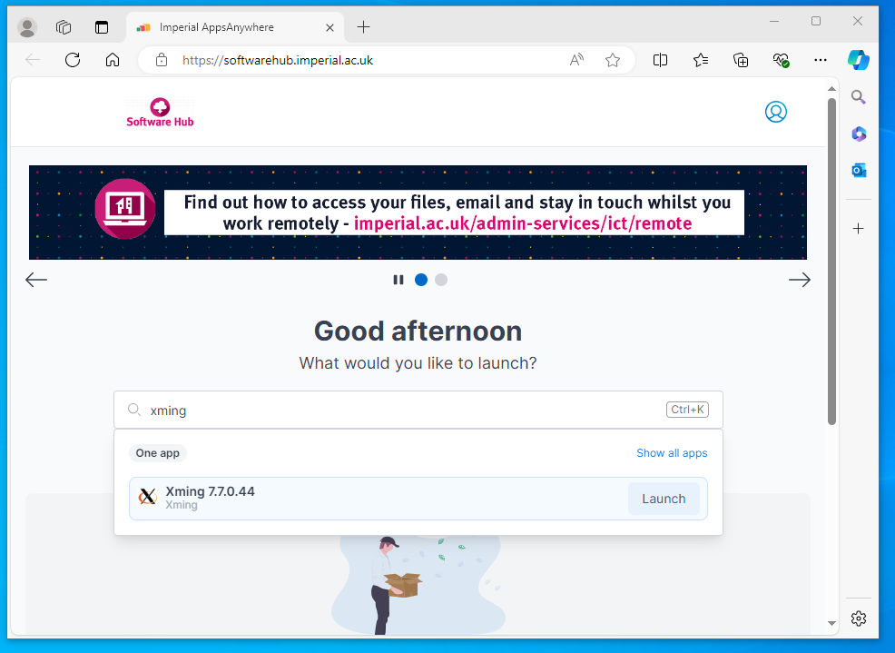 - In the PuTTY interface, inside the Connection tab, enable X11 forwarding. This will allow the server to communicate with Xming to show you graphical data when required.
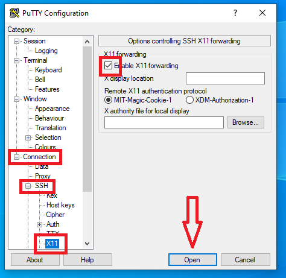 - In the Session tab, under Host Name, input the name of the server that you want to access, and save this session by giving it a name under Saved Sessions and clicking Save. Whenever you want to reconnect with PuTTY, you can simply load this session again. Finally, click Open:
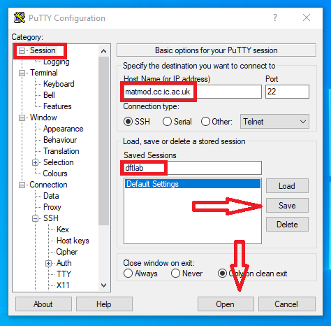 - If this is your first time connecting to this server, you might get a security alert asking whether you want to accept the host key. Press Accept.
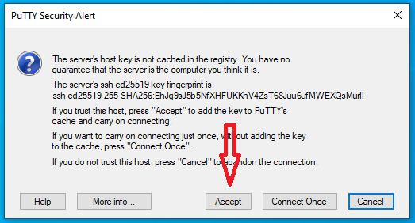 - A terminal will be presented to you. In order to login, you will have to enter your College username, press Enter, enter your password and press Enter again.
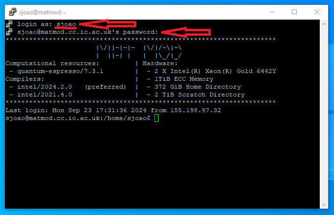
Note: while we try to ensure students registered for the course have access before the first class, we may not have the most up-to-date information. If it doesn't accept your login details please let me know and we can give you access.
Congratulations! You are now connected to matmod and have complete access to its powerful Linux command line.
3. Basic command line usage
While using a computer for day-to-day activities, you most likely have become familiar with a Graphical User Interface (GUI), which is a graphical way to interact with the computer. Most Operating Systems (OS) also provide a non-graphical way to interact with the computer through the command line (also usually denoted as the terminal). In this course we will deal exclusively with the Linux command line. The command line offers a completely equivalent way to the GUI to perform tasks, but has several advantages:
- It uses very few system resources. This is especially useful if there are dozens of users using the same machines simultaneously, as in this Lab
- It is extremely flexible. With knowledge of just a few basic operations, it is possible to chain them together to perform complex tasks, or to automate tasks altogether
In this section, you will learn how to use the command line to perform simple tasks like listing the files inside a directory, creating and copying directories and run simple programs. Most of the programs that you will use in this course will run exclusively in the command line, but you can also use it to run programs with a GUI.
If you successfully connected to the remote server using PuTTY, you should have a Linux command line in front of you right now.
The terminal will give you access to a prompt that can be used to interact with the computer. The prompt contains three sections: username @ machine : current working directory $. The commands you write will always be in front of the $ symbol.
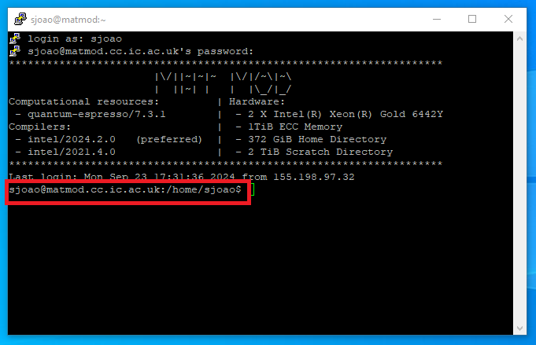
Task 1: launching your first program
Write the command gedit then press Enter. This might take a few seconds, but then it will open a graphical text editor. The prompt will be unresponsive until this program finishes. This will be the case for most Linux commands. In this case, the program will finish once you close the gedit window. Until the command completes its assigned task, you cannot use the prompt, but once the task is finished, the prompt can be used again.
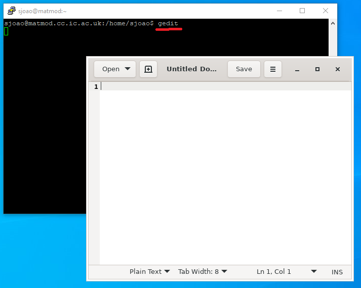
Important Remember to close the gedit window
Task 2: command line programs
Not all commands open up graphical interactive windows. Let's now take a look at commands which provide output exclusively in the command line.
- Run the program
date, which will print out to the terminal the current date and time. - You can also provide additional parameters to certain commands to make them do specific tasks. For example, the command
echoprints out to the terminal the text that’s written after it. Run the program echo withDFTas a parameter -echo DFT, and check that it prints out the wordDFTto the terminal.
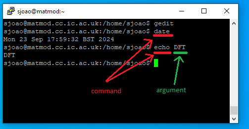
In sum, commands in the Linux command line have the following structure
1 | |
where the number of arguments can be virtually arbitrary.
3.1 Writing to and reading from file
In many circumstances, you might want to save the output of a command to a file so that you can process it later. This can be done with the output redirect symbol >. For example, running
1 | |
in the command line will save the output that you got previously into the file called file.txt. You can check that this file has been created by using gedit.
Task 3: saving to file
- Run the previous command
- Open it using gedit and check that its contents match your expectation
1gedit file.txt

While gedit provides all the means necessary to read and write files, it can be very slow when the connection to the server is not stable, or when many people are connected to the server simultaneously. A quicker way to read the contents of a file is by using the cat command. When you provide an argument to the cat command, it will assume that the argument is a file name and will output its contents.
Task 4: Reading from a file
Run the following command and check that the output matches what you saw with gedit
1 | |
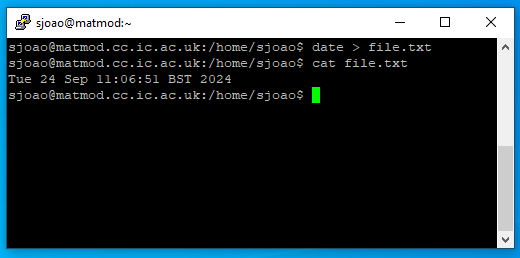
If the file is very long, you can also use head file.txt if you just want to print out the first lines of the file, or tail file.txt if you just want to print out the last lines. Alternatively, you can use a more interactive command like less file.txt which will replace the terminal with a file reader that you can scroll through with your mouse wheel or the keyboard arrows. You can exit this file reader by pressing q. Reading the file directly from the command line is often the quickest and most convenient way to get information from a file.
3.2 Using a file as argument to a command
Some Linux commands can use instructions saved in files to perform their job. For the purposes of this Lab, we will be doing this by using the input redirect feature with the symbol <.
Task 5 - Files as input
The command sort sorts the input that is given to it.
- Using gedit, create a file called
numbers.txtcontaining three separate lines with the numbers 3,9 and 1 - Run
sort < numbers.txt. This command will print out the sorted list of numbers. - Save the output of this command into another file
numbers_sorted.txtusing what you learned previously:sort < numbers.txt > numbers_sorted.txt - Read the contents of this new file using
catand check that the numbers have been sorted
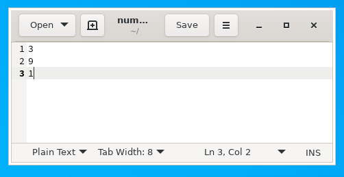 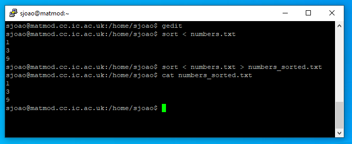
4. Navigating the system
So far, all the commands you have been running were executed inside of your home directory. In a GUI, you navigate the system by clicking on folders with the cursor and looking at their contents. In a terminal, everything is done via commands. Instead of clicking on a folder, you issue a command to change your current location to that folder. Instead of visualizing the files as icons inside a folder, you issue a command to show the file names in the current directory.
4.1 Understanding the directory structure
The directory (or folder) structure in Linux is defined through the use of the forward slash /. For example, /file1.txt means that file1.txt is inside the root directory, which is represented by a single forward slash /. /directory1/file1.txt means that file1.txt is inside directory1 which is inside the root directory /. As a user of the matmod server, your files are located in the directory /home/username, which has a shorthand expression ~. This is called the home directory.
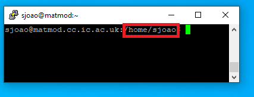
4.2 Figuring out where you are
If you want to check what is your current directory, run the command pwd, which stands for print working directory. This will print out something like /home/sjoao, which means that the directory sjoao is located inside the directory home. It also means that you are currently located inside the /home/username folder. This directory /home/sjoao is known as the home directory, and is equivalently represented by a tilde ~ as a shorthand.
Task 4.1
Run the command pwd in the command line. Check that this output corresponds to a directory structure as discussed above
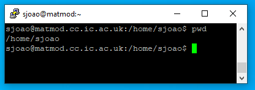
4.3 List the contents of the directory
If you want to list the contents of your current directory, run the list command ls. This will print out to the terminal the list of folders and files that exist in the current directory. Note: in the terminal, the digit 1 and the letter l may look identical, so be sure you write the letter, not the digit.
Task 4.3
Run the command ls and check that the files that you created in the previous tasks are here.
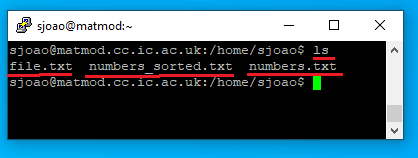
4.4 Creating new directories and changing directories
The command mkdir (which stands for make directory) is used to create new directories inside of the current directory. If you run mkdir newDirectory, you will see that a directory newDirectory has been created. To navigate to that directory, run cd newDirectory. To navigate to its parent directory, run cd .. in the command line. The two dots .. stand for parent directory.
These commands are all relative to the current directory, but you can also use the absolute path. For example, run mkdir ~/newDirectory/dir2. You will see that a directory will be created inside of newDirectory, which is inside of your home ~ directory. To navigate to it directly, you can run cd ~/newDirectory/dir2 in just the same way. Running cd ~ will place you back into your home directory.
Task 4.4
Run the commands above and in each step run ls and pwd to better understand the directory structure.
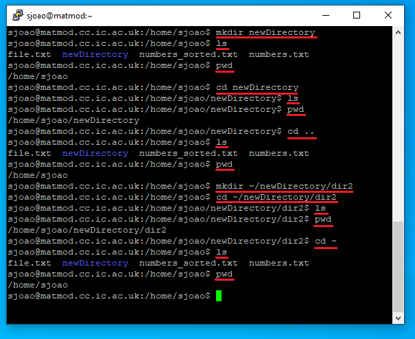
5. File manipulation
5.1 Copying files
In the terminal, you copy files by using the cp command, which requires the origin (file to be copied) to be specified as the first argument and destination to be specified as second argument. For example, if you want to copy file ~/text.txt (which is located in your home folder) to the directory ~/newDirectory/dir2, you can do it in two ways:
- Specify the full paths:
1cp ~/file.txt ~/newDirectory/dir2 - Navigate to one of the directories and use a relative path:
The dot
1 2
cd ~/newDirectory/dir2 cp ~/file.txt ..in this last command represents this directory, so the command means: “copy the file~/file.txt, which is located in the home directory into the current directory”.
Note: if the file already exists in the destination, it will be overwritten.
5.2 Copying folders
To copy folders, the only extra thing you need to do is to specify the additional -r argument to cp. For example, you can copy the directory dir2, which has the location ~/newDirectory/dir2 to the home directory as such:
1 | |
Note: Unlike files, folders are not overwritten. If you copy a folder into the location of another, instead of overwritting, the command will place the source folder inside of the destination folder.
Task
Run the commands from the previous two sections and check with ls that the contents of each folder correspond to the expectation.
5.3 Moving and renaming files
The syntax to move files is exactly the same as the one for the cp command. To move a file file.txt from ~/newDirectory/dir2 to ~/newDirectory, run the command
1 | |
cp, but without the additional -r argument.
Task
Create a new directory dir3 inside the home directory and move ~/dir2 into dir3
1 2 3 | |
To rename a file, you also use the mv command. You can think of renaming a file as moving a file into another with a different name. For example, to rename file.txt to data.txt, use mv file.txt data.txt
Task
Run the previous command and check that the file has the expected name.
5.4 Deleting files
To delete a file, you use the rm command. For example, if you want to remove file file.txt, use
rm file.txt. To delete directories, the argument -r has to be provided: rm -r ~/newDirectory/dir2
Note: If you run the rm command, the deleted file or directory will be deleted permanently, there is no way to undo it, so make sure you are running the correct command.
Task
Run the previous command and check that file.txt and dir2 no longer exist.
6. Wildcards
In Linux many commands will accept wild cards as a way to perform their action on a set of files. * is used to represent zero or more characters. The * wildcard is very commonly used and worth remembering.
ls *.txtwould list all the files ending in.txtin the current directory.rm *.owould remove all files ending in.oin the current directory.
7. Job Control - terminating commands
Sometimes, you will execute a command which does not seem to finish, so you may want to force it to terminate. You can do this by pressing the keys Ctrl+C
Task
Run gedit and terminate it with Ctrl+C. Make sure that you are pressing the keys Ctrl+C while the terminal window is selected, not the gedit window.
8. Tab completion
Typing commands in their entirety can be a time-consuming process while interacting with a terminal. Tab completion is a very useful feature of the Linux command line which tries to fill in the commands for you.
Task
Try typing ged in a terminal and hitting tab. The full name of the program
gedit should automatically fill in. If more than one match is possible,
pressing tab twice will bring up a list of possible matches. Try typing
ge and pressing tab twice to see this.
9. Loading modules
Environment modules provide extra functionality to your session by giving you access to additional software packages. The reason why these additional softwares are often not available by default is because they may cause conflict with other softwares. Environment modules ensure that these softwares can be loaded safely without causing conflicts. They are almost always used on HPC systems to make various versions of common version of computational software packages available. The main command to know is module. This command allows you to load and unload different software packages. To load a package, use module load followed by the name of the packages. In this lab, you will need to load the Quantum Espresso package:
1 | |
Throughout the course, when running on the server you'll need to remember to load the modules above before you'll be able to use the codes in the Quantum Espresso package.
10. Running your first DFT calculation!
Now that you know the basics of the Linux operating system, it's time to run your first DFT calculation. First, we need to setup a few files and directories. The various files associated with the labs for this course are all available
in /opt/MSE404-MM/docs/labs.
Task 4.5
Try changing directories to /opt/MSE404-MM/docs/labs and exploring the folders and taking a look at files that are contained in there. Change back to the home directory once you're done.
Task
- In your home directory create the directory
MSE404-MM. - Copy the directory with the input files for this course
/opt/MSE404-MM/docs/labs/lab01to the directory you just created~/MSE404-MM. Remember you need to pass an additional flag tocpto copy a directory. - List the contents of directory
~/MSE404-MM/lab01/heliumwithls- You'll see there are three files in the directory you copied.
He.in- an input file for the DFT code you'll be using.He.pbe-mt_fhi.UPF- a pseudopotential file for helium, which contains information about the interaction between the helium nucleus and the electrons.- You'll learn more about these types of files in later classes.
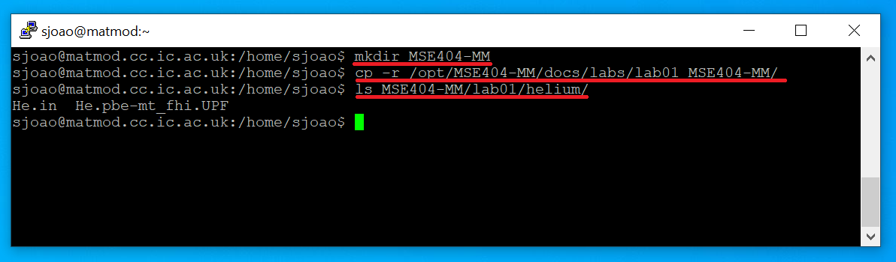
Now you are finally ready to run the DFT calculation
Task
- First we need to load the Quantum Espresso module. If you haven't done this already, run
module load quantum-espresso. - Now you'll be able to use the various Quantum Espresso package executables directly. Use
cdto go to the helium folder you copied earlier (~/MSE404-MM/lab01/helium) - The input file there is for the
pw.xcode. You can pass this file topw.xwith input redirection and save the output to a file with output redirection (otherwise the output will just be in the terminal). To do this typepw.x < He.in > He.out. - See what files are present in the directory now. As well as the output file we saved, some others were generated.
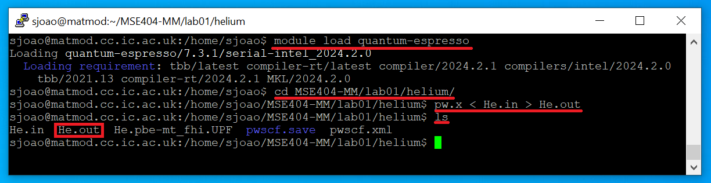 - Take a look through the output file
He.outusingless. You can use the arrow keys to scroll,gto go to the beginning of the file,Gto go to the end of the file andqto exit the reader. We'll discuss the contents of this in next week's lab, but for now skip to the section immediately following the line that readsEnd of self-consistent calculation:- This lists the calculated energy eigenvalues: in helium only the 1s orbital is occupied by two electrons
- Compare the value of the 1s orbital energy to the result you get from the Schroedinger equation when electron-electron interactions are neglected.
- Following this, you can see in the output, the value of the highest occupied energy level in eV, and the total energy in Rydberg. How does the total energy compare to the experimental value of -79.02 eV? How does it compare to the total energy obtained when electron-electron interactions are neglected?
- Congratulate yourself on running your first DFT calculation.
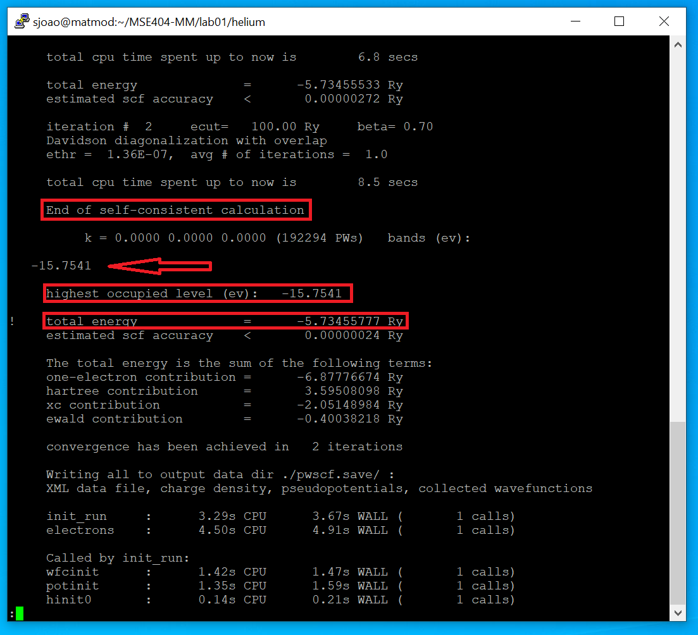
11. Pipe operator and filtering output with grep
Running commands may produce a lot of output, making it difficult to find the information you want. The Linux command line provides the option to filter output by using the grep command together with the | operator (pipe operator). The pipe operator passes the output of a command as input to the next command. For example, cat He.out | grep highest will read out the contents of the output file He.out and, instead of printing them to the terminal, will pass them to grep, which will filter it according to the keyword highest. Any line which contains this keyword will then be printed out to the terminal. If no line exists with the keyword, nothing will be printed out.
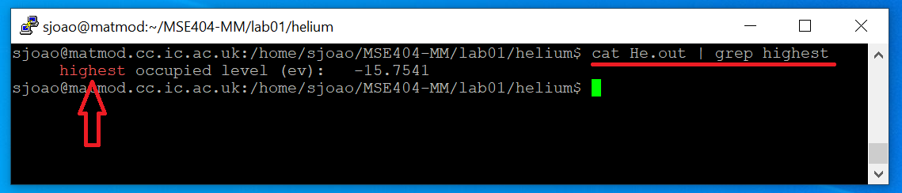
Task
Modify the example above to print out all the lines containing the keyword total. Why do you get several outputs now?
12. Uploading files to matmod
In order to complete your homework assignments, you might want to upload your DFT input files to matmod and use matmod to perform the DFT calculations. In this section, you will learn how to do that. In the Imperial Software Hub, search and run WinSCP
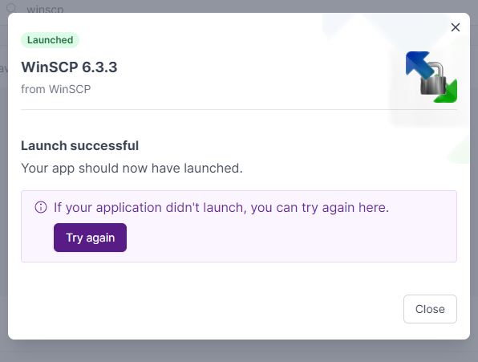
You will be presented with an interface to input the connection details. This is similar to what you have done with PuTTY.
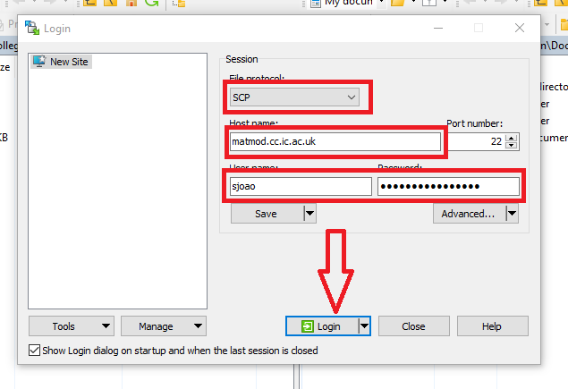
After the connection is successful, you will be prompted to add the host key to a cache. Press Accept
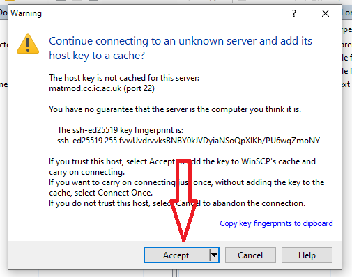
Finally, you will be presented with a window with your Windows folders on the left and your matmod folders on the right. Now you can simply drag and drop the files you want into matmod. In this example, we are uploading some file containing instructions, but in your case you might be uploading the DFT input files.
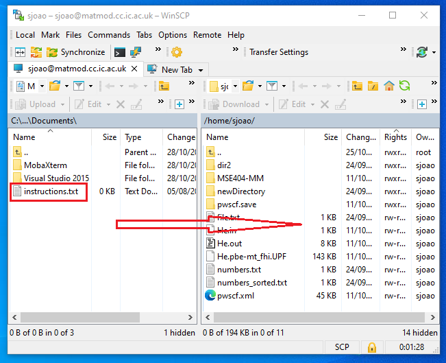
Task
-
Using WinSCP, upload a file of your choice to matmod.
-
Using the Linux command line you were using previously, check with
lsthat the file you just uploaded shows up in the correct directory.
13. Logging out
Once you're done, exit the session by closing the terminal and then pressing OK. This will close Putty. Finally, go back to the Cloudpaging Player, select Xming, Stop the application and press Yes.
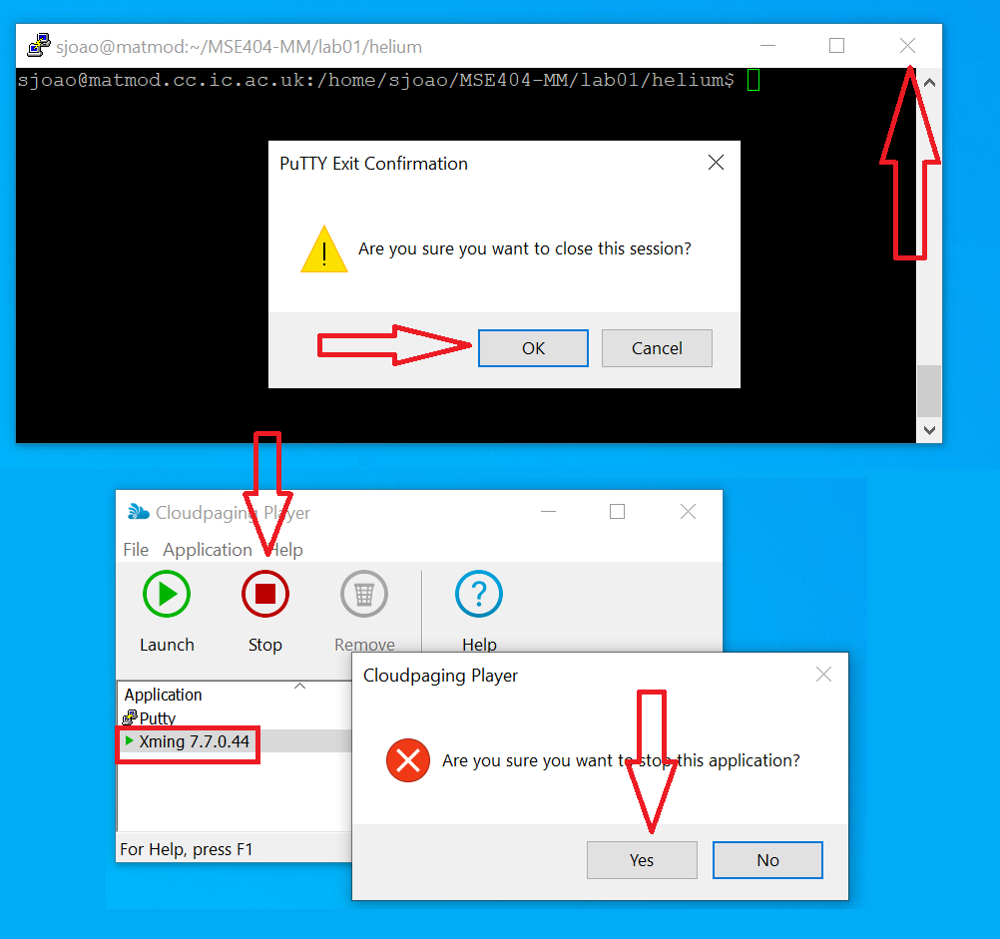
14. IMPORTANT - Disk quota limitations
The matmod server is shared among all the students. To prevent any one student from using up too much storage, each student is limited to 1GB of storage in their home directory. This is not a lot, considering that many DFT calculations will store files consisting of several hundreds of MB. To get around this, matmod provides another directory called data inside your home directory which has a much higher storage capacity. As you progress throught the DFT course, please use the data directory instead of the home directory to perform your calculations.
If you come across any of the following problems, it's probably because you ran out of space in your home directory:
- You get a disk storage error when creating new files or running DFT calculations.
- You cannot run gedit because you get an error instead of the window showing up.
- When you login, you get a message concerning XAuthority.
15. Summary
There are a lot of commands to remember from this week's lab. You can always
refer back to this week, but to make things easier in future weeks you might
find a cheatsheet useful. If you don't want to make your own, a quick Google
search of Linux cheat sheet brings up a number of options.
To run the DFT example in this lab you will need to do the following:
- Make a directory that will hold the material for the MSE404 labs:
mkdir ~/MSE404-MM. - Copy the directory with the inputs for this lab to this directory:
cp -r /opt/MSE404-MM/docs/labs/lab01 ~/MSE404-MM. - Load the modules needed to run Quantum Espresso:
module load quantum-espresso. - Go to the directory with the input files you copied
cd ~/MSE404-MM/lab01/helium. - Use
pw.xto process the input file, saving the output to a file:pw.x < He.in > He.out. - Take a look through the output file:
less He.out. - Logout of the remote server once you're done.